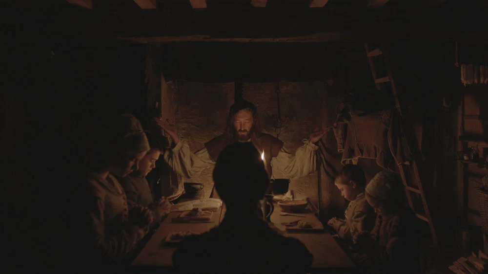
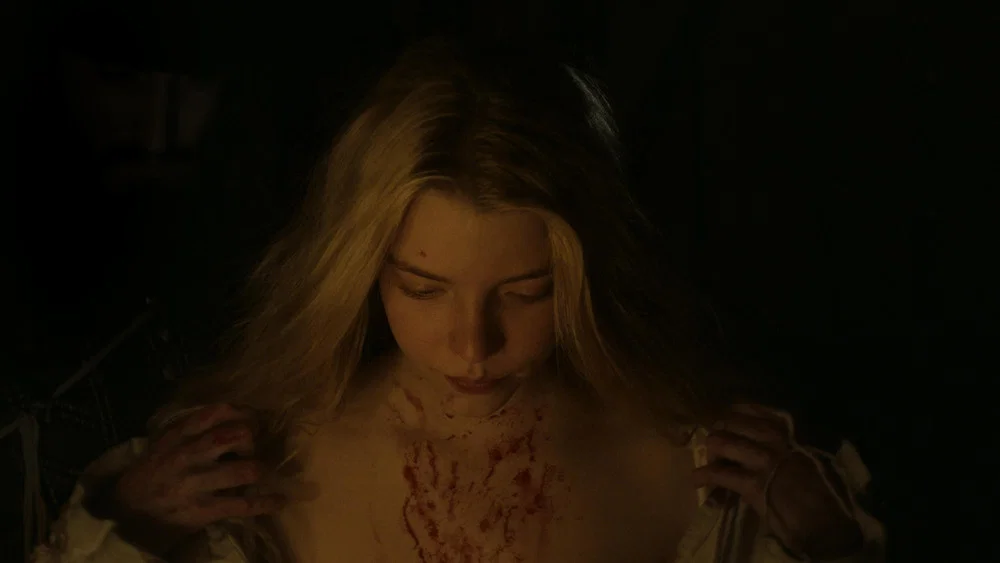

The VVitch comincia con un cancello che si chiude. William, capofamiglia puritano, è appena stato bandito dalla piantagione per una disputa sull'interpretazione delle Scritture, e anziché piegare la testa la alza ancora di più: carica moglie e figli su un carro, volta le spalle alla comunità e va a cercarsi un pezzo di terra ai margini della foresta. Lo sguardo della cinepresa resta per un attimo sui volti dei bambini, mentre le assi di legno della palizzata si serrano alle loro spalle. A mio parere, tutto The Witch è già lì: in una famiglia che scambia l'orgoglio per rettitudine e l'isolamento per purezza.

Robert Eggers, al suo esordio nel lungometraggio, ha dato al film un sottotitolo che è quasi una dichiarazione di poetica, A New-England Folktale, e ha costruito i dialoghi attingendo a diari, cronache e atti processuali del Seicento. Va da sé che il rischio era quello del film in costume ben confezionato e un po' imbalsamato. Invece la ricostruzione filologica serve a uno scopo preciso: farci entrare in una mentalità in cui Dio e il Diavolo sono presenze concrete quanto la pioggia e la nebbia. Ed è proprio dentro quella mentalità che il film fa scattare la sua trappola. Perché la famiglia è convinta che la propria fede rigorosa funzioni da scudo spirituale contro la natura selvaggia, e The Witch racconta con pazienza quasi crudele come quello scudo si trasformi in un'arma puntata verso l'interno. Il nemico è nel bosco, certo. Ma è anche, e forse soprattutto, dentro le mura di casa.

Provo a spiegarmi partendo da una scelta che all'inizio può sembrare controintuitiva. Eggers non gioca sull'ambiguità: la strega esiste, e ce lo mostra quasi subito, nella sequenza più disturbante del film, quella che segue la scomparsa del piccolo Samuel durante un gioco di cucù con la sorella maggiore Thomasin. Nessun dubbio, dunque, sulla natura sovrannaturale della minaccia. A conti fatti, però, la domanda non è più "c'è davvero qualcosa nel bosco?", ma "cosa farà questa famiglia ora che il male ha bussato alla porta?".
Per certi versi l'ingranaggio narrativo è quello di una tragedia domestica in cui il soprannaturale funziona da detonatore. Basta osservare come circola la colpa. Katherine, la madre, sprofonda nel lutto per Samuel e riversa su Thomasin un risentimento che ha radici più profonde della perdita: la figlia sta diventando donna, attira lo sguardo imbarazzato del fratello Caleb, e in quella casa la femminilità che sboccia è già di per sé un sospetto. William, dal canto suo, ha venduto di nascosto la coppa d'argento della moglie per comprare trappole da caccia, e quando la coppa risulta scomparsa lascia che i sospetti cadano sulla figlia piuttosto che ammettere la propria debolezza. È un dettaglio piccolo, ma rivelatore: l'uomo che ha trascinato tutti nel deserto in nome della verità non riesce a dire una verità minuscola alla propria moglie.

La fede, che dovrebbe tenere unita la famiglia, diventa il linguaggio con cui ci si accusa a vicenda. I gemelli Mercy e Jonas, che giocano e cantano con il caprone nero Black Phillip, puntano il dito contro Thomasin; Thomasin, esasperata, prima finge per gioco di essere una strega e poi ribatte che i veri indemoniati sono loro; i genitori, di notte, discutono se mandare via la figlia. Nessuno ascolta più nessuno. Ognuno ha a disposizione un vocabolario fatto di peccato, tentazione e dannazione, e lo usa come una clava. La paranoia non ha bisogno di prove, le basta un sistema di pensiero che spieghi ogni disgrazia come una colpa da attribuire a qualcuno.
La sequenza della morte di Caleb è, in questo senso, la più lucida del film. Il ragazzo torna dal bosco nudo, febbricitante, e nel delirio recita una preghiera in uno stato di estasi che sembra insieme mistica e sensuale, prima di spirare tra le braccia dei genitori. È una scena di grande potenza, e la sua ambivalenza è il punto: il linguaggio religioso e quello della possessione si sovrappongono fino a diventare indistinguibili.

Il disegno generale è sostenuto da un impianto registico di rara coerenza. La fotografia di Jarin Blaschke lavora con la luce naturale e con quella delle candele, restituendo interni angusti e cieli lattiginosi in cui non c'è mai davvero una via di fuga per lo sguardo. Le musiche di Mark Korven, fatte di archi stridenti e voci corali, sembrano emergere dal bosco più che accompagnare le immagini. E Anya Taylor-Joy, qui al primo ruolo da protagonista, regge il film con una recitazione tutta in sottrazione: Thomasin osserva, subisce, tenta di difendersi con le stesse parole che la condannano, e solo alla fine smette di farlo.

La famiglia è morta perché si è chiusa dentro un recinto di certezze, e quando di quella famiglia non resta più nulla, a Thomasin non rimane che varcare l'ultimo confine. La domanda che Black Phillip le rivolge, se desideri vivere deliziosamente, è terribile proprio perché arriva come una liberazione. Il cancello che si chiudeva nella prima scena si riapre, ma verso il bosco.


The Witch è un film su come il fanatismo, nel tentativo di proteggersi dal male, finisca per fabbricarlo in casa, spingendo l'unica persona innocente esattamente là dove tutti la accusavano di essere.
— E. V.